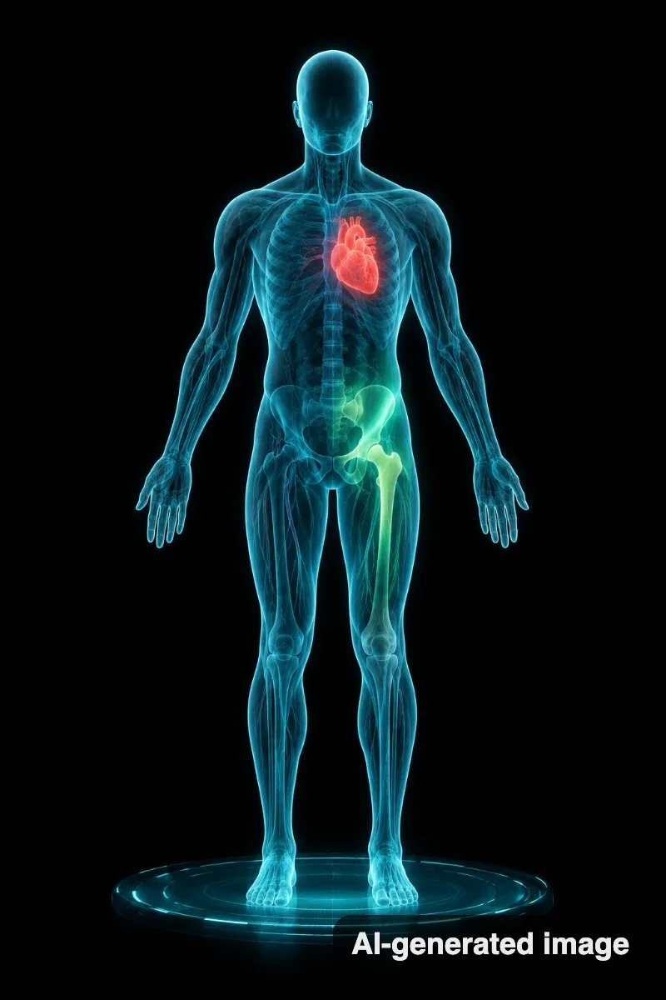

YOUR ONBOARD COMPANION
A little guidance.
A clearer next step.
Speak naturally. Keep your eyes on the mission.
Synthetic health data · real local voice
Web demo: the same rules and synthetic data run entirely in your browser. Voice input, the local voice and the SQLite database run in the full local app (see the README).
Open the onboard mission console ↗
CREW 03 EARTH LINK OFFLINE
Preparing the display

FROM THE GLASSES. TO YOUR VIEW.Your glasses.
Your glasses.
Your companion.
Tap the glasses to enter your field of view.
SIMULATED VIEW THROUGH THE LENSES
OPTICAL DISPLAYMICROPHONE INPUTOPEN-EAR AUDIO
YOUR LATEST CHECKS
Indicators describe the demo measurements.
ASTRA
I'm here when you need me.
HEART CONTEXTIllustrative anatomy · AI-generated image · not a scan
OPTICAL HUD CONCEPT · NOT CONNECTED TO PHYSICAL GLASSESSEEDED LOCALLY
LET'S TAKE IT ONE STEP AT A TIME
Hey. I'm Astra.
Turn on your microphone, then say:
“Astra, how are my bones?”
ASTRAI'm here. We can check your heart or bones, or talk through what changed.
Save this for onboard review?
The request stays on this device.
Prefer to type?
Your review requests stay on this device.
FOR MEDICAL REVIEW
Measurements behind the summary.
STATE—
Bronze —→Silver —→Gold —Quarantined —